GALATASARAY ÜNİVERSİTESİ
1.175.000 m2 arazi üzerine kurulu olan Devlet Üniversitesi’nde 1000 kVA trafo güç kullanılmış olup orta gerilim kablolama ve trafo merkezi kurulmuştur.

AKKOZA KONUTLARI
AKKOZA konutları 24 MVA güç için 17 farklı trafo merkezi kurulup , OG proje, orta gerilim kablolama ve trafo merkezi kurulmuştur. 2,5 milyar dolarlık yatırımıyla : 250 farklı daire 450 bin m2 arsa üzerine 7500 konut inşaatı , proje içinde 210 bin metrekarelik 4 katlı alışveriş merkezi , 113 mağazalık açık alışveriş alanı , okul , hastane , dinlenme alanı ve parkların yanı sıra 20 bin metrekare açık , 5 bin metrekare kapalı alana sahip spor kulübü Club İstanbul , 3 bin metrekare alana sahip 5 bin kişilik Festival Park ve 7 bin metrekarelik Akkoza Park bulunuyor.

AKBATI AVM– MAVİ KULE–YEŞİL KULE
Akbatı Residences&Akbatı Alışveriş ve Yaşam Merkezi Esenyurt`ta yer almakta olup , 13,5 MVA güç için OG proje , orta gerilim kablolama ve trafo merkezi kurulmuştur. 242.000 metrekare inşaat alanına sahip olan Akbatı Alışveriş ve Yaşam Merkezi`nde 65.542 metrekare net kiralanabilir alan içerisinde; 200`e yakın mağaza, 9 sinema salonu, dünya mutfaklarını buluşturan restoranlar, çocuk oyun, eğitim alanları ve ayrıca 5.000 kişi kapasiteli bir Festival Park yer almaktadır. Akiş`in %100 hisseye sahip olduğu projede , 4 katlı Alışveriş ve Yaşam Merkezi üzerinde bulunan 21 katlı Mavi Kule ve 11 katlı Yeşil Kule`de 1+1 den 348 rezidance mevcuttur. Proje kapsamında yaklaşık 220 milyon dolar civarında yatırım yapılmıştır.
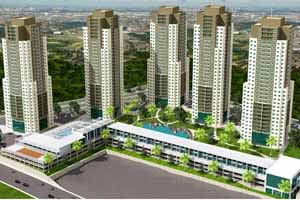
REGNUM ASTRUM TOWERS
4800 kVA güç için OG proje, orta gerilim kablolama ve trafo merkezi kurulmuştur. Haramidere`de 34 bin metrekare üzerine inşa edilen, 5 blok ve 1285 daireden oluşan Regnum Astrum Towers projesinde bulunan açık ve kapalı havuz, fitness center, sauna, restoran, çarşı, açık ve kapalı otopark, spor alanları ve çocuk oyun parkları bulunmaktadır.
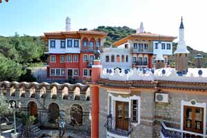
DATÇA PERİLİ BAY RESORT
Datça Perili Bay Resort Hotel`de orta gerilim kablolama ve trafo merkezi imalatı yapılmıştır. Perili Bay Resort kendine ait koyunda, 400 metrelik play, 18 dubleks, 144 standart oda kapasitelidr.
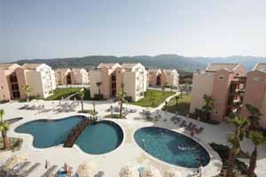
KUŞADASI GOLF SPA RESORT
1.650.000 metrekare alan üzerine kurulu olup Aydın Kuşadası tatil otelleri bölgesi Söke mevkiinde bulunmakta olup orta gerilim kablolama ve trafo merkezi imalatı yapılmıştır. Otelde 11 adet açık havuz, 1 adet kapalı havuz, 8 adet çocuk havuzu ve kaydıraklı havuz bulunmaktadır.Kuşadası Golf Resort & Spa da İtalyan konseptine göre dizayn edilmiş olan 90 adet dublex oda, olmak üzere 285 adet superior oda, 100 adet klasik suit oda olmak üzere toplam 475 oda kapasitesi bulunmaktadır.
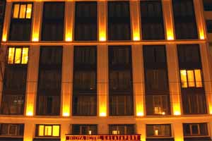
NİDYA HOTEL GALATAPORT
Nidya Hotel Galataport`un tüm AG & OG elektrik tesisatı yapılmıştır. 120 otel odası kapasiteli, spa&fitness, toplantı odaları ve restaurantlar mevcuttur.
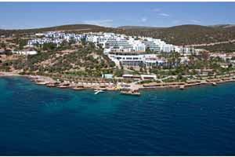
BODRUM HOLIDAY RESORT&SPA
414 yataklı Bodrum bölgesindeki otel için 2500 kVA güç için OG proje, orta gerilim kablolama ve trafo merkezi imalatı yapılmıştır.
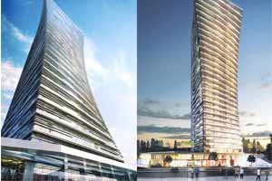
SİNPAŞ GYO - FER YAPI TOWER
Yeni ofis konsepti ile lanse edilen projede,30 katlı tek blokta 2500 kVA güç için OG proje, orta gerilim kablolama ve trafo merkezi inşaat yapılmıştır.Parsel Alanı: 5.894 metrekare İnşaat Alanı: 42.000 metrekare Proje Tipi: Ofis-Çarşı 213 Bağımsız Bölüm
Konum: Bomonti / Şişli
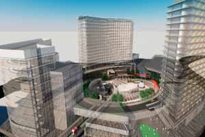
TEMA PARK
Temapark İstanbul 80 MVA güç talebiyle OG proje, orta gerilim kablolama ve trafo merkezi imalatı yapılacaktır. 3 milyar euro bedeli ile Toplu Konut İdaresi Başkanlığı (TOKİ) arsası üzerinde inşa edilecek olan Temapark İstanbul projesi 250 bin metrekare inşaat alanına sahip. Halkalı Temapark İstanbul projesi 4 bin 26 adet konuttan meydana geliyor.
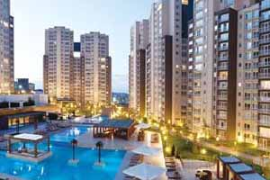
İnnovia 1-2-3-4-5
Yeşil İnşaat`ın Beylikdüzü`ndeki Innovia Projesi 34.800 kVA güç için OG proje, orta gerilim kablolama ve trafo merkezi yapılmıştır. 375.000 metrekare alan üzerinde 5 etaptan oluşmakta olup, 14.000 konut, işyerleri, otel ve AVM`yi kapsamaktadır. Bu projenin yatırım değeri 900 milyon TL`yi aşmaktadır.Yaklaşık 30.000 kişinin yaşayacağı projedir.
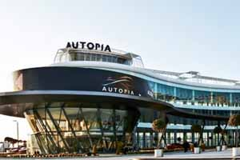
AUTOPIA
Otomobil fuarı olarak tasarlanan toplam 150 milyon dolarlık yatırımla, 117.000 metrekare satılabilinir ve kiralanabilir alana ve 470 adet mağazaya sahip olacak AUTOPIA 8 MVA güç için OG proje, orta gerilim kablolama ve trafo merkezi kurulmuştur.
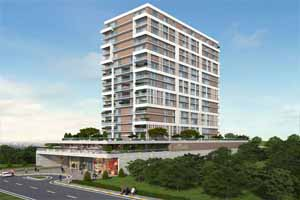
Beyaz Kule
Beyaz Kule`de 1600 kVA güç için OG proje, orta gerilim kablolama ve trafo merkezi kurulmuştur.Yaklaşık 3 dönüm arazi üzerinde gerçekleştirilmekte olan ve 100 rezidanstan Akbatı Beyaz Kule`nin altında yer alan butik restoran ve butik ticari alanlar açık olacak kapalı sosyal projede yer almaktadır.
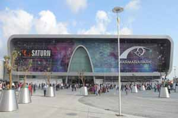
MARMARA PARK
Marmara Park Alışveriş Merkezi 16.800 kVA güç için OG proje, orta gerilim kablolama ve trafo merkezi imalatı yapılmıştır. Yatırım hacmi 220 milyon Euro olup toplam 100.000 metrekarelik kiralanabilir alan ile Bauhaus Yapı Marketi ve Real Hipermarketi de kapsayan Marmara Park , 200`den fazla mağaza ile 4000 araçlık otopark alanı mevcuttur.
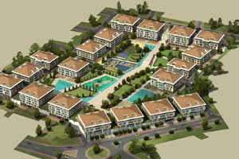
AVCILAR PARK
Avcılar Park 2850 kVA güç için OG proje orta gerilim kablolama ve trafo merkezi yapılmıştır. Toplam 39.000 metrekarelik alanlı 19 blokta 275 daireyle birlikte 50 mağaza ve 1 süpermarketin bulunduğu projedir.
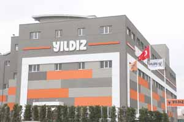
YILDIZ GAZ ARMATÜRLERİ
18.000 metrekare kapalı alana sahip fabrika binası 2000 kVA güç için OG proje, orta gerilim kablolama ve trafo merkezi kurulmuştur.
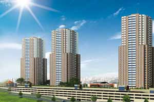
SOLARKENT
28.000 metrekarelik alanda projelendirilen Solarkent`te 3000 kVA güç için OG proje, orta gerilim kablolama ve trafo merkezi imalatı yapılmıştır. SOLARKENT 31 katlı 4 bloktan ve 10 farklı daire seçeneğinden oluşuyor. 866 adet konutta içinde güneş santralinin bulunduğu ve güneş enerjisinden faydalanarak elektriğin sağlandığı ilk proje , C1 Tipi Trafo uygulaması yapan ilk proje, üstü açılabilir yarı olimpik yüzme havuzu ile de konut projeleri arasında konusunda ikincidir. Türkiye`nin ortalama yıllık toplam güneşlenme süresi, 2640 saat (günlük toplam 7,2 saat), ortalama toplam ışınım şiddeti ise 1311 kWh/m2 yıl(günlük toplam 3,6 kWh/m2) olarak tespit edilmiştir. Bu gölgeleme alanıüzerinde yer alacak ve her biri 220 w olan panellerden 2600 adet kullanılarak, yılda ortalama 780.000 kWh enerji üretilmektedir. Bu sayede ortalama 550 kW kurulu gücü olan santral kurulması planlanmaktadır. Sitede Solar Club spor ve yaşam ayrıcalığı,Fitness Center, Yüzme Havuzları,SPA Merkezi,Cafe & Bistro, basketbol ve voleybol sahaları,mini futbol sahası,tenis kortu,gündelik dinlence alanları, güneş enerjisinden üretilen 550kVA elektrik enerjisi ile site aidatlarında büyük tasarruf. Tüm daire ve ortak alanları destekleyen kesintisiz enerji sistemli projedir.
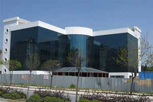
BEYMED GÖZ HASTANESİ
12.000 metrekare kapalı alana inşaatı yapılan hastane için 1000kVA güç için OG proje, orta gerilim kablolama ve trafo merkezi yapılmıştır.
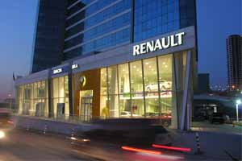
BİKA OTO SERVİS
16.000 metrekare kapalı alana sahip BİKA için 1600kVA güç için OG proje, orta gerilim kablolama ve trafo merkezi yapılmıştır.
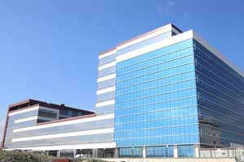
YILMAZ KİMYA
26.000 metrekare kapalı alana sahip ofis, depo ve sanayi alanlı fabrika binası için 2500kVA güç için OG proje, orta gerilim kablolama ve trafo merkezi yapılmıştır.
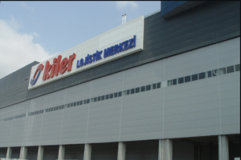
KİLER LOJİSTİK MERKEZİ
Kiler Lojistik Merkezi için 1600 kVA güç için OG proje, orta gerilim kablolama ve trafo merkezi yapılmıştır. Esenyurt Depo ve Antrepo Projesi Esenyurt Haramidere`de yer almaktadır. Yaklaşık 100.000 metrekare büyüklüğündeki inşaat alanında Lojistik Depo ve Antrepo Depo inşaatının yanı sıra Kiler Grubun yeni Genel Müdürlük binası da bulunmaktadır. Lojistik depo kapasitesi 100 tıra ve 500 mağazaya hizmet vermeye başlamıştır.
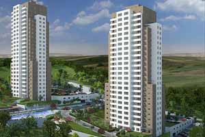
MESA MESKEN BAHÇEŞEHİR EVLERİ
Bahçeşehir Evleri Projesi`nde AG talep ve OG trafo merkezi imalatları yapılmıştır. 17.858 metrekarelik alan üzerine inşaa edilecek olan 2 adet blok, giriş +23 kat olup 182 adet konuttan oluşacaktır. Site içerisinde açık yüzme havuzu, sosyal tesis, çocuk oyun alanları, tenis ve basketbol sahası olup, blokların bodrum katlarında her daire için 1 açık, 1 kapalı otopark ve 1 adet depo mevcut olacaktır.
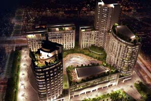
CITY CENTER ESENYURT
City Center Esenyurt için OG proje, orta gerilim kablolama ve trafo merkezi kurulmuştur. İçerisinde bulunan residenslar ile yüksek konforlu bir yaşam sunarken, ayrıcalıkların sadece standart olduğu deluxe ve Premium konseptli ofisleri ile iş merkezi tanımını ticaretin yeni merkezine dönüştürürken dünyaca ünlü markaların yer aldığı alışveriş merkezi ile de tüm sosyal ihtiyaçların merkez noktasını belirtiyor. City Center adı üstünde bir şehir merkezi kamu hizmetleri ile vatandaşları bir araya getirecek bir fikir bu fikrin arkasında Esenyurt Belediye Başkanlığı, Esenyurt Kaymakamlığı ve Esenyurt İlçe Emniyet müdürlüğü gücü ve hizmet anlayışı yatıyor.
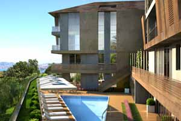
QENT İSTİNYE
Qent İstinye 3 bin 70 metrekarelik alan üzerine yayılıyor. Projede 1+1, 2+1, 3+1 ve 4+1 konut tipleri bulunuyor.Qent İstinye; Boğaziçi Köprüsü`ne ve Fatih Sultan Mehmet Köprüsü`ne yakın konumda inşa ediliyor. Qent İstinye 21 konuttan meydana geliyor. Projedeki konutların iç tasarımlarında Porsche Desing Studio imzası bulunuyor. Qent İstinye`nin sosyal alanları arasında; sauna, açık ve kapalı yüzme havuzları, fitness salonu, misafir otoparkları ve bireysel kapalı otoparklar bulunuyor.